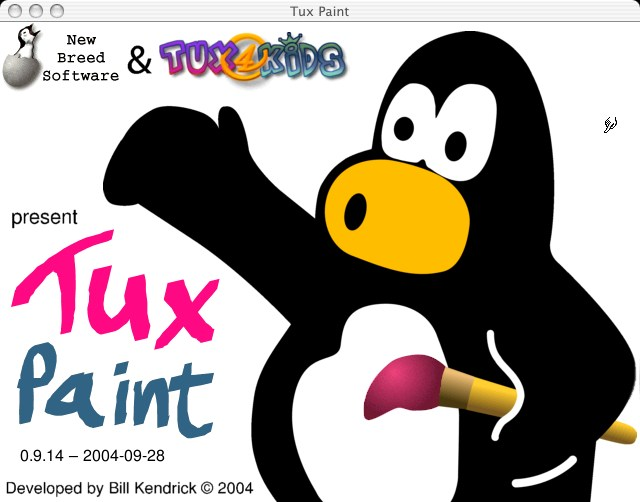
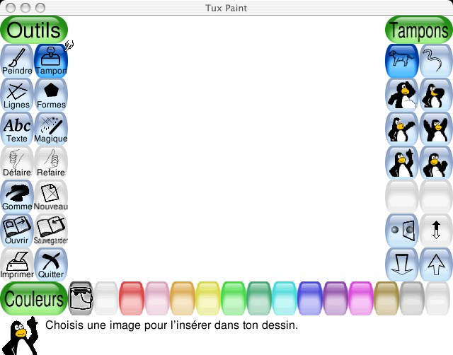
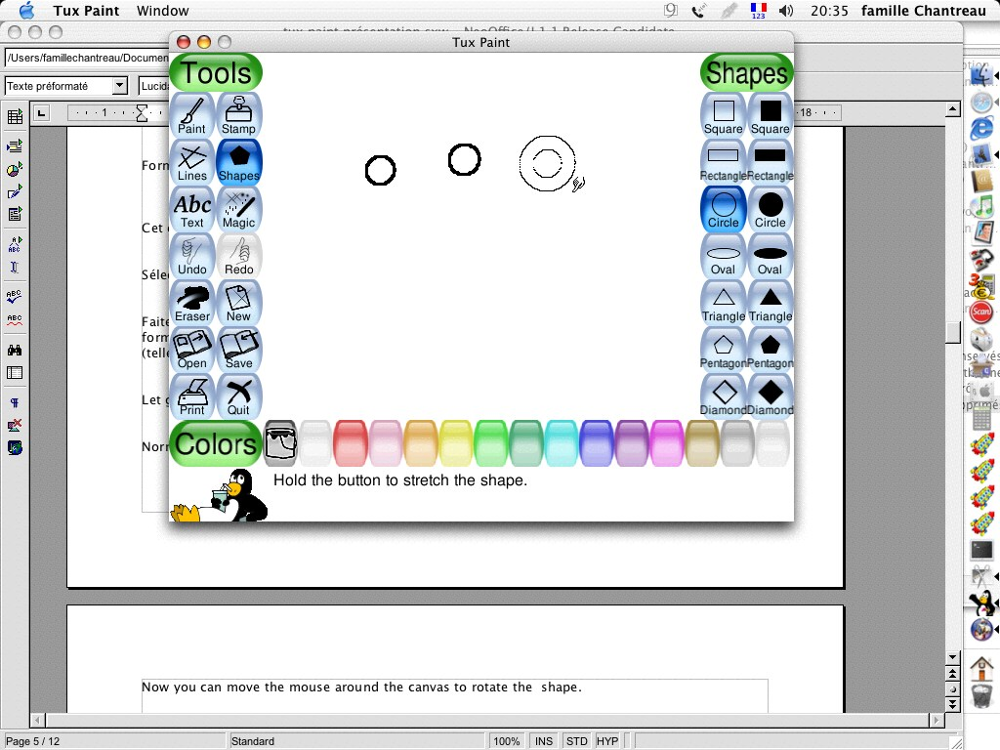
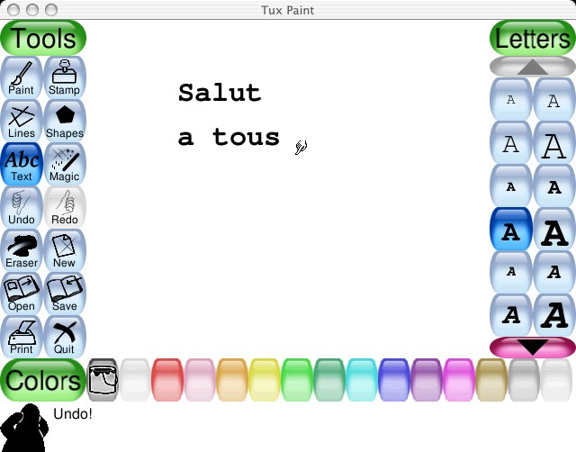
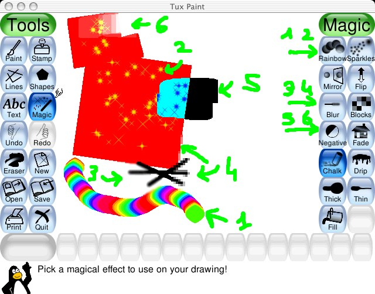
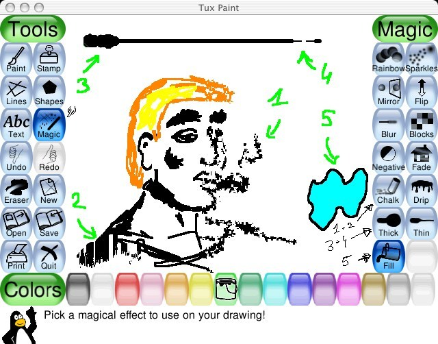
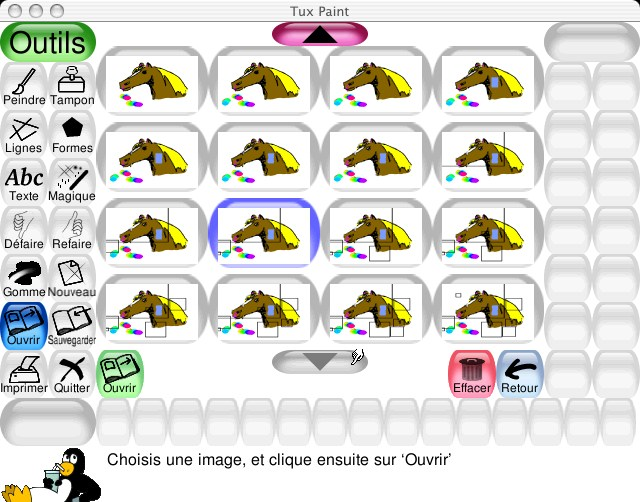

Traduit septembre 2005 de
version 0.9.14
Un programme simple de dessin pour enfants
Copyright 2004 par Bill Kendrick
New Breed Software
bill@newbreedsoftware.com
http://www.newbreedsoftware.com/tuxpaint/
14 juin 2002 - 24 septembre 2004
# A propos #
A/ Qu'est-ce que Tux Paint?
B/ Licence.
C/ Objectifs
1 Facile et drôle.
2 Extensibilité.
3 Portabilité
4 Simplicité.
# Utiliser Tux Paint #
A/ démarrer Tux Paint.
1 utilisateurs de Linux/Unix.
2 Utilisateurs de Windows.
3 Utilisateurs de Mac OS X.
B/ Ecran de démarrage
C/ Ecran principal
D/ Outils disponibles.
1 Outils de dessin.
1-1 Peindre (Brosses) [Paint] :
1-2 Tampon [stamp] :
1-3 Lignes [Lines] :
1-4 Formes [Shapes] :
1-4-1 Mode Normal
1-4-2 Mode Forme Simple
1-5 Texte [Text] :
1-6 Magique (effets spéciaux) [Magic (Special Effects)] :
1-6-1 Arc en ciel [Rainbow]
1-6-2 Etincelles [Sparkles]
1-6-3 Miroir [mirror]
1-6-4 Renverser [Flip]
1-6-5 Brouiller [Blur]
1-6-6 Blocs [Blocks]
1-6-7 Négatif [Negative]
1-6-8 Affadir [Fade]
1-6-9 Craie [Chalk]
1-6-10 Gouttes [Drip]
1-6-11 Epaissir [Thick]
1-6-12 Amincir [Thin]
1-6-13 Remplir [Fill]
1-7 Gomme [Eraser] :
2 Autres outils
2-1 Défaire [Undo] :
2-2 Refaire [Redo] :
2-3 Nouveau [New] :
2-4 Ouvrir [Open] :
2-5 Sauvegarder [Save] :
2-6 Imprimer [Print] :
2-6-1 Déconnecter l'impression
2-6-2 Restreindre l'impression
2-6-3 la commande d'impression
2-6-4 Réglage de l'imprimante
2-7 Quitter [Quit] :
A/ Qu'est-ce que Tux Paint?
B/ Licence.
C/ Objectifs
1 Facile et drôle.
2 Extensibilité.
3 Portabilité
4 Simplicité.
# Utiliser Tux Paint #
A/ démarrer Tux Paint.
1 utilisateurs de Linux/Unix.
2 Utilisateurs de Windows.
3 Utilisateurs de Mac OS X.
B/ Ecran de démarrage
C/ Ecran principal
D/ Outils disponibles.
1 Outils de dessin.
1-1 Peindre (Brosses) [Paint] :
1-2 Tampon [stamp] :
1-3 Lignes [Lines] :
1-4 Formes [Shapes] :
1-4-1 Mode Normal
1-4-2 Mode Forme Simple
1-5 Texte [Text] :
1-6 Magique (effets spéciaux) [Magic (Special Effects)] :
1-6-1 Arc en ciel [Rainbow]
1-6-2 Etincelles [Sparkles]
1-6-3 Miroir [mirror]
1-6-4 Renverser [Flip]
1-6-5 Brouiller [Blur]
1-6-6 Blocs [Blocks]
1-6-7 Négatif [Negative]
1-6-8 Affadir [Fade]
1-6-9 Craie [Chalk]
1-6-10 Gouttes [Drip]
1-6-11 Epaissir [Thick]
1-6-12 Amincir [Thin]
1-6-13 Remplir [Fill]
1-7 Gomme [Eraser] :
2 Autres outils
2-1 Défaire [Undo] :
2-2 Refaire [Redo] :
2-3 Nouveau [New] :
2-4 Ouvrir [Open] :
2-5 Sauvegarder [Save] :
2-6 Imprimer [Print] :
2-6-1 Déconnecter l'impression
2-6-2 Restreindre l'impression
2-6-3 la commande d'impression
2-6-4 Réglage de l'imprimante
2-7 Quitter [Quit] :
A/ Qu'est-ce que Tux Paint?
Tux Paint est un programme de dessin libre destiné aux jeunes enfants de 3 ans et plus. Il est simple, avec une interface facile à utiliser, avec des effets sonores rigolos, et une mascotte motivante qui aide te guide les enfants lorsqu'ils utilisent le programme. Il fournit un canevas blanc et une variétés d'outils de dessin pour aider les enfants à être créatifs.B/ Licence.
Tux Paint est un projet open source, et un logiciel gratuit livré sous la licence publique générale GNU (GPL). Il est gratuit, et le code source derrière le programme est disponible. (Cela permet aux autres d'ajouter des caractéristiques, de réparer des bogues et d'utiliser tout ou partie du programme pour leur propre logiciels GPL)Voir COPYING.txt pour le texte complet sur la licence GPL
C/ Objectifs
1 Facile et drôle.
Tux Paint se propose d'être un programme simple pour les jeunes enfants. Il n'a pas l'ambition d'être un outil de dessin général. Il est fait pour être amusant et facile à utiliser. Les effets sonores et un personnage "cartonnesque" aident l'utilisateur à savoir ce qui a lieu, et participent à l'amusement. Il y a aussi une flèche de souris extra-large de style cartoon.Tux Paint est extensible. Des brosses et des tampons peuvent être ajoutés ou enlevé. Par exemple, un professeur peut ajouter une collection de formes animales et demander à ses élèves de dessiner un écosystème. Chaque forme peut avoir un son propre qui est joué et un texte qui apparaît quand l'enfant la sélectionne.
Tux Paint est déjà porté sur diverses plateformes informatiques : Windows, Macintosh OS X, Linux, etc... L'interface est la même quelque soit le système d'exploitation. Tux Paint fonctionne parfaitement bien sur de vieux systèmes (tels que les pentium 133), et peut être paramétré pour fonctionné mieux sous des systèmes plus lents.
4 Simplicité.
Il n'y a pas d'accès direct à l'arborescence du système. L'image courante est conservée lorsque le programme quitte, et réapparaît lorsqu'il redémarre. Sauvegarder des images ne nécessite pas de créer un nom de fichier ou d'utiliser le clavier. Ouvrir une image se fait en la sélectionnant dans une collection de vignettes. L'accès aux autres fichiers de l'ordinateur est restreint.A/ démarrer
Tux Paint.
Tux Paint doit avoir placé une
icône de lancement dans votre menu KDE ou GNOME, dans le sous
menu 'Graphique'.Vous pouvez aussi taper la commande shell :
$ tuxpaint
Si une erreur à lieu elle sera signalée sur le terminal (stderr).
Si vous avez installé Tux Paint sur votre ordinateur en utilisant le 'Tux Paint installer', il a dû vous demander si vous vouliez installer le raccourcis du menu démarrage et le raccourcis du bureau. Si vous avez accepté, vous pouvez simplement démarrer Tux Paint à partir de la section Tux Paint du menu démarrage (i.e. sous le menu programmes sur Windows XP), ou en double cliquant l'icône "Tux Paint" sur votre bureau.
Si vous avez installé Tux Paint en utilisant le fichier ZIP, ou si vous avez refusé l'installation par l'installateur des raccourcis, vous devez double cliquer l'icône "tuxpaint.exe" dans le répertoire 'Tux Paint' de votre ordinateur.
Par défaut, l'installateur 'Tux Paint' va installer le répertoire "Tux Paint" dans le répertoire "C:\Program Files\" à moins que vous ayez modifié cela pendant l'installation.
Si vous utilisez le fichier ZIP, le répertoire Tux Paint sera là où vous effectuerez la décompression.
Double cliquez sur l'icône Tux Paint après avoir téléchargé le .dmg et avoir copié le contenu dans le dossier applications.
B/ Ecran de démarrage
Quand Tux Paint démarre, un écran titre/crédits apparaît.
Une fois le démarrage terminé, appuyez sur une touche ou cliquez avec la souris pour continuer. (ou après environ 30 seconde l'écran de démarrage disparaît automatiquement.)
C/ Ecran principal
L'écran principal est divisé selon les sections suivantes :- Coté Gauche : la barre d'outils.
La barre d'outils contient les contrôles de dessin et d'édition.
- Au milieu : le canevas de dessin.
La partie la plus large de l'écran, au centre, c'est le canevas de dessin. C'est Là où on dessine.
- Coté droit : le sélecteur.
Il dépend de l'outil sélectionné : le sélecteur montre différentes choses telles que les brosses pour dessiner lorsque l'outil dessin est sélectionné. Quand l'outil tampon est sélectionné, la partie droite montre les différents tampons disponibles.
- En bas : les couleurs.
Une palette de couleurs disponibles se trouve en bas de la fenêtre.
- Tout en bas : l'aire d'aide.
Tout en bas de l'écran, Tux, le pingouin de linux, donne des conseils et d'autres informations pendant que vous dessinez.

D/ Outils disponibles.
1-1 Peindre (Brosses) [Paint] :
Les brosses de dessin permettent de dessiner à main levée, en utilisant différentes formes de brosses (choisies dans le sélecteur) de différentes couleurs (choisie dans la palette du bas).
Si vous appuyez sur le bouton de la souris et que vous déplacez celle-ci en même temps, vous dessinez.
Pendant que vous dessinez, un son est joué. Plus la brosse est grosse, plus le ton est bas.
1-2 Tampon [stamp] :
L'outil tampon est comme un tampon en caoutchouc ou alors comme des gommettes. Il permet de copier des images pré dessinées ou photographiques (comme des images de cheval, d'arbre, ou la lune...) dans votre dessin.
Lorsque vous bougez la souris, une silhouette suit le pointeur, montrant où le tampon va être appliqué.

Différents tampons peuvent avoir des effets sonores. Certains tampons peuvent être colorés ou teintés.
Les tampons peuvent être rétrécis et étendus, et de nombreux tampon peuvent être basculé verticalement et en miroir en utilisant les contrôles sur le bas du sélecteur.
(NB : Si l'option "--nostampcontrols" est utilisée, Tux Paint ne permettra ni les modifications de taille, ni les basculements. Voir la documentation sur les options.)
1-3 Lignes [Lines] :
Cet outil vous permet de dessiner des lignes droites en utilisant différentes brosses et couleurs, identiques à l'outil peindre.
Cliquez avec la souris pour déterminer le point de départ. En maintenant appuyé et en déplaçant la souris vous voyez une «bande élastique» qui montre la ligne qui va être dessinée.
En lâchant le bouton, la ligne se forme en faisant un «boing».
1-4 Formes [Shapes] :
Cet outil vous permet de dessinez de simple formes géométriques remplies ou non.Sélectionnez une forme dans le sélecteur à droite (cercle, carré, ovale,...etc).

Faites un cliqué-glissé avec la souris pour placer puis modifier la taille de la forme. Certaines formes peuvent changer de proportions (telles que les rectangles et les ovales) et d'autres non (telles que les carrés et les cercles.).
Relâchez le bouton lorsque vous avez fini de choisir la taille.
1-4-1 Mode Normal
Maintenant vous pouvez tourner la souris autour de la forme pour la faire tourner.Cliquez sur le bouton de nouveau et la forme sera dessinée.

1-4-2 Mode Forme Simple
Si le mode simple forme est activé (i.e. avec l'option "--simpleshapes"), la forme sera dessinée sur le canevas dès que le bouton sera relâché, c'est à dire sans l'étape de rotation.1-5 Texte [Text] :
Choisir une police (à partir des lettres sur la droite) et une couleur (dans la palette du bas). Cliquez sur l'écran et un curseur apparaîtra. Tapez un texte qui apparaît alors sur l'écran. (apparemment ne prend pas les lettres accentuées du clavier Mac.)
Tapez Enter ou Return et le texte sera dessiné dans l'image et le curseur descendra d'une ligne.

Cliquez ailleurs dans l'écran et la ligne courante de texte sera déplacée là, où vous pourrez continuer d'éditer.
1-6 Magique (effets spéciaux) [Magic (Special Effects)] :
Les outils 'magiques' sont un groupe d'outils spéciaux. Sélectionnez un des outils magiques dans le sélecteur de droite, et ensuite appliquez l'effet sur l'image en cliquant et glissant la souris.1-6-1 Arc en ciel [Rainbow]
Cet outil est similaire à une brosse de pinceau, mais en bougeant la souris, les couleurs de l'arc en ciel se succèdent.1-6-2 Etincelles [Sparkles]
Cet outil dessine des étincelles jaunes sur l'image.1-6-3 Miroir [mirror]
Lorsque cet outil est sélectionné et que vous cliquez sur l'image, celle-ci est inversée comme dans un miroir.1-6-4 Renverser [Flip]
Similaire au miroir cet outil permet d'inverser l'image par rapport à un miroir horizontal.1-6-5 Brouiller [Blur]
Cela estompe l'image là où vous cliquez-glissez la souris.1-6-6 Blocs [Blocks]
Cela pixellise l'image là où vous cliquez-glissez la souris.1-6-7 Négatif [Negative]
Cela inverse les couleurs de l'image là où vous cliquez-glissez la souris (Blanc devient noir et inversement, jaune devient bleu...etc)cet outil pâlit les couleurs là où vous cliquez-glissez la souris. (Appliquer l'effet plusieurs fois au même endroit peut pâlir la couleur jusqu'au blanc.)

1-6-9 Craie [Chalk]
Celui-ci rend des parties de l'image (où vous bougez la souris) comme dessinées à la craie.1-6-10 Gouttes [Drip]
Celui-ci fait couler votre dessin là où vous appliquez votre souris.1-6-11 Epaissir [Thick]
Cela rend les traits de couleur noire plus épais là où vous passez la souris.1-6-12 Amincir [Thin]
Similaire de Epaissir, excepté que les couleurs sombres s'amincissent (et les couleurs claires s'épaississent.).Pour voir correctement l'effet de ces deux derniers outils effectuez les manipulations suivantes :
- Créez un trait noir et appliquez lui les deux outils
- Créez un rectangle blanc dans un surface noire et appliquez lui les deux outils.
1-6-13 Remplir [Fill]
Cet outil rempli une zone délimitée par un trait fermé avec une couleur.
1-7 Gomme [Eraser] :
Cet outil est similaire à Peindre. Partout où vous cliquez ou cliquez-glissez, le dessin est effacé et devient blanc, ou de la couleur de l'arrière-plan de l'image courante si vous avez choisi une image 'starter'.
Différentes tailles de gomme sont disponibles.
Quand vous déplacez la souris sur l'image, un cadre suit le pointeur, montrant quelle partie de l'image sera effacée.
Pendant que vous effacez, un son grinçant de torchon sur du verre est émis.
2 Autres outils
2-1 Défaire [Undo] :
Cliquer sur cet outil annule la dernière action de dessin. Vous pouvez annuler plus d'une action.NB: Vous pouvez aussi taper ctrl-Z sur le clavier pour annuler.
2-2 Refaire [Redo] :
Cliquer sur cet outil restaure ce qui a été annulé avec le bouton Annuler.Tant que vous n'avez pas redessiné, vous pouvez restaurer autant d'action annulées que vous voulez.
NB: Vous pouvez aussi taper ctrl-R sur le clavier pour restaurer.
2-3 Nouveau [New] :
Cliquer sur le bouton Nouveau démarre un nouveau dessin. Il vous demande d'abord si vous voulez vraiment en démarrer un.NB: Vous pouvez aussi taper ctrl-N sur le clavier pour démarrer un nouveau dessin.
2-4 Ouvrir [Open] :
Celui-ci vous montre la liste d'images que vous avez sauvegardées. S'il y en a plus qui peuvent apparaître sur l'écran, utilisez les flèches monter et descendre en haut et en bas de la liste pour défiler dans la liste d'images.
Cliquez sur le bouton vert «ouvrir» en bas à gauche pour charger l'image.
(Vous pouvez aussi double-cliquer sur l'icône d'une image pour l'ouvrir.)
Cliquez sur le bouton rouge «Effacer» (la poubelle) en bas à droite de la liste pour effacer l'image sélectionnée. (Il vous sera demandé de confirmer.)
Ou cliquez sur le bouton bleu «retour» avec une flèche en bas à droite de la liste, pour annuler et retourner au dessin précédent.
Images 'Starter'
En plus des images que vous sauvegardez, Tux Paint fournit des images 'Starter'. Les ouvrir revient à créer une nouvelle image, sauf que cette image n'est pas blanche, mais peut être comme une feuille de livre de coloriage (Un dessin en ligne noir et blanc, que vous pouvez colorer.) ou comme une photographie en trois D, où vous pouvez dessiner des parties en arrière.Les images 'Starter' ont un arrière plan vert dans l'écran d'ouverture (Les images normales ont un arrière plan bleu.) Quand vous chargez un 'starter', dessinez dessus puis le sauvegardez, cela créer une nouvelle image. (Cela n'écrase pas le starter original, ainsi vous pourrez le réutiliser de nouveau plus tard.)
Si vous choisissez d'ouvrir une image et que l'image courante n'est pas enregistrée, il vous sera demandé si vous voulez la sauvegarder ou non. (Voir Sauvegarder ci-dessous)
NB : Vous pouvez aussi taper [Ctrl]-[O] Sue le clavier pour obtenir le dialogue d'ouverture'.
Pour plus de renseignement sur les images starter voir comment créer des brosses...
2-5 Sauvegarder [Save] :
Cela sauvegarde votre image courante.Si vous ne l'avez pas sauvegardée avant, il va créer une nouvelle entrée dans la liste des images sauvegardées (i.e. Cela va créer un nouveau fichier.)
NB : Il ne vous demande rien tel que le nom du fichier; il sauvegarde simplement l'image et joue un son de déclenchement d'appareil photo.
Si vous avez sauvegardé l'image avant, ou si c'est une image que vous venez juste d'ouvrir en utilisant la commande 'ouvrir', il vous sera d'abord demandé si vous voulez sauvegarder sur l'ancienne version ou si vous voulez créer un nouveau fichier.
(NB: Si les options "--saveover" ou "--saveovernew" sont sélectionnées, il ne vous sera pas demandé avant de sauvegarder si vous voulez conservé l'ancien fichier (Voir la documentation sur les options pour plus de détails.)
NB: Vous pouvez aussi taper [Ctrl]-[S] sur le clavier pour sauvegarder.
2-6 Imprimer [Print] :
Cliquez ce bouton et votre image sera imprimée.2-6-1 Déconnecter l'impression
Si l'option "--noprint" a été sélectionnée (soit avec "noprint=yes" dans le fichier de configuration de Tux Paint, soit en utilisant la ligne de commande "--noprint") le bouton imprimé est déconnecté. (Voir la documentation sur les options)2-6-2 Restreindre l'impression
Si l'option "--printdelay" est utilisée (soit en utilisant la commande "printdelay=SECONDS" dans le fichier de configuration, soit en écrivant dans la ligne de commande "--printdelay=SECONDS" ), vous ne pouvez imprimer qu'une fois toutes les SECONDS secondes.Par exemple, avec "printdelay=60", vous ne pouvez imprimer qu'une fois par minute. (Voir la documentation sur les options)
2-6-3 la commande d'impression
(Linux et Unix seulement)La commande utilisée par défaut est un groupe de commande qui converti un PNG en fichier postscript qui est envoyé à l'imprimante :
pngtopnm | pnmtops | lpr
Cette commande peut être changée en réglant la valeur de "printcommand" dans le fichier de configuration de Tux Paint. (Voir la documentation sur les options )
2-6-4 réglage de l'imprimante
(Windows uniquement)Par défaut, Tux Paint imprime simplement sur l'imprimante par défaut avec les réglages par défaut quand vous cliquez sur le bouton 'imprimer'.
Toutefois si vous maintenez enfoncée la touche [ALT] du clavier en cliquant sur 'imprimer', tant que vous n'êtes pas en mode plein écran, une fenêtre de dialogue d'impression,dans laquelle vous pouvez changer les réglages, apparaît.
Vous pouvez changer plus définitivement la configuration de l'imprimante en utilisant l'option "printcfg", soit en utilisant "--printcfg" dans une ligne de commande, soit en utilisant "printcfg=yes" Dans le fichier de configuration de Tux Paint. ("tuxpaint.cfg").
Si l'option "printcfg" est utilisée, les réglages de l'imprimante seront chargés à partir du fichier "userdata/print.cfg". Tout changement sera sauvegardé là de la même façon. (Voir la documentation sur les options)
2-7 Quitter [Quit] :
Cliquer sur le bouton 'Quitter' ferme la fenêtre Tux Paint, ainsi que taper sur la touche escape [esc].(NB : le bouton 'Quitter' peut être déconnecté (Par exemple avec l'option "--noquit" en ligne de commande) mais la touche [esc] fonctionne toujours. (Voir la documentation sur les options))
Il vous sera d'abord demandé si vous voulez vraiment quitter.
Si vous choisissez de quitter et que vous n'avez pas sauvegardé l'image courante, il vous est demandé si vous voulez le faire. Si ce n'est pas une nouvelle image, il vous est demandé si vous voulez l'enregistrer par dessus l'ancienne version ou si vous voulez créer une nouvelle entrée. (Voir la fonction 'Sauvegarder' ci-dessus.)
NB : Si l'image est sauvegardée, elle sera rechargée automatiquement au prochain démarrage de Tux Paint.